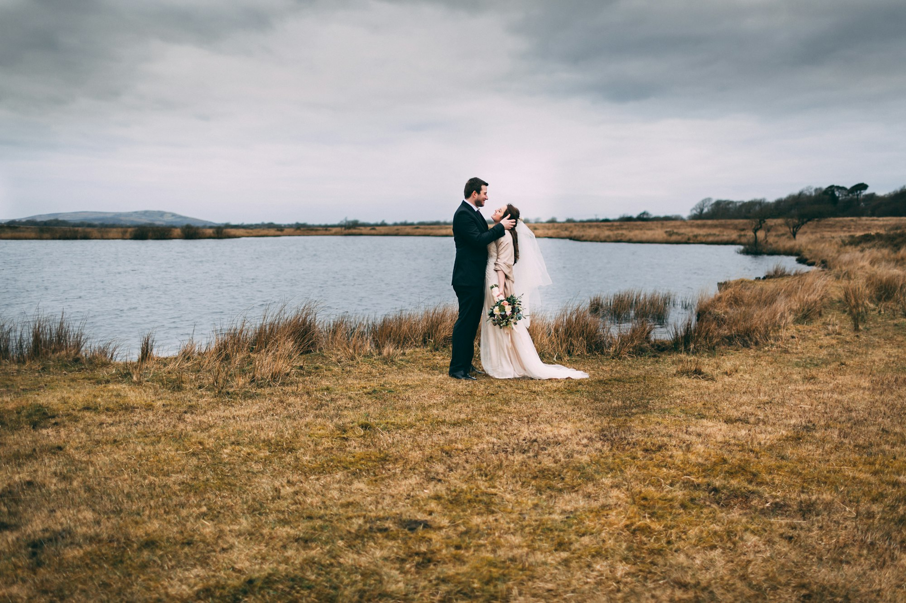
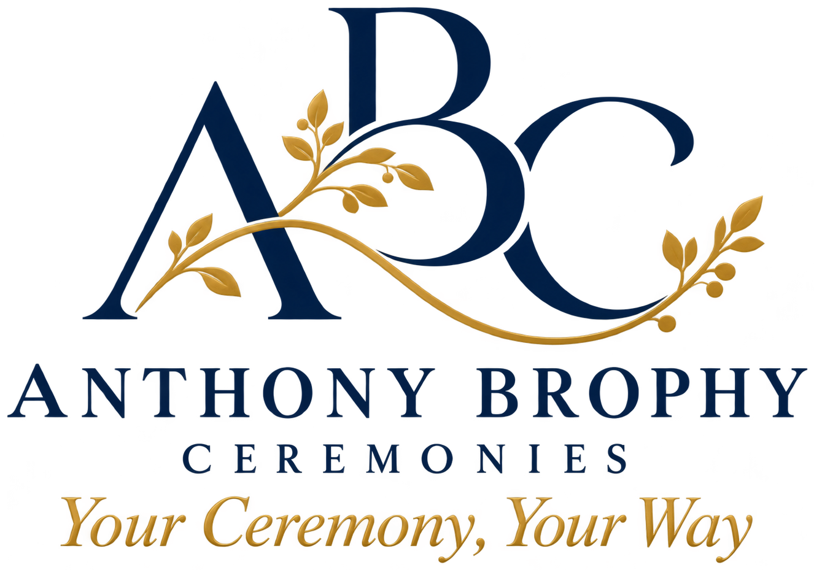
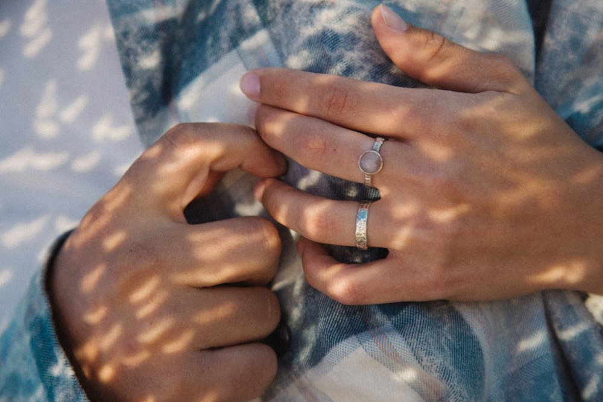
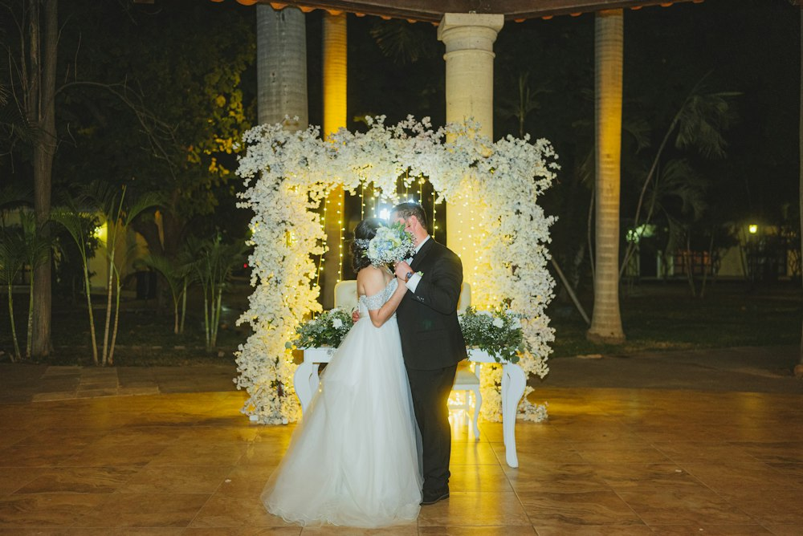
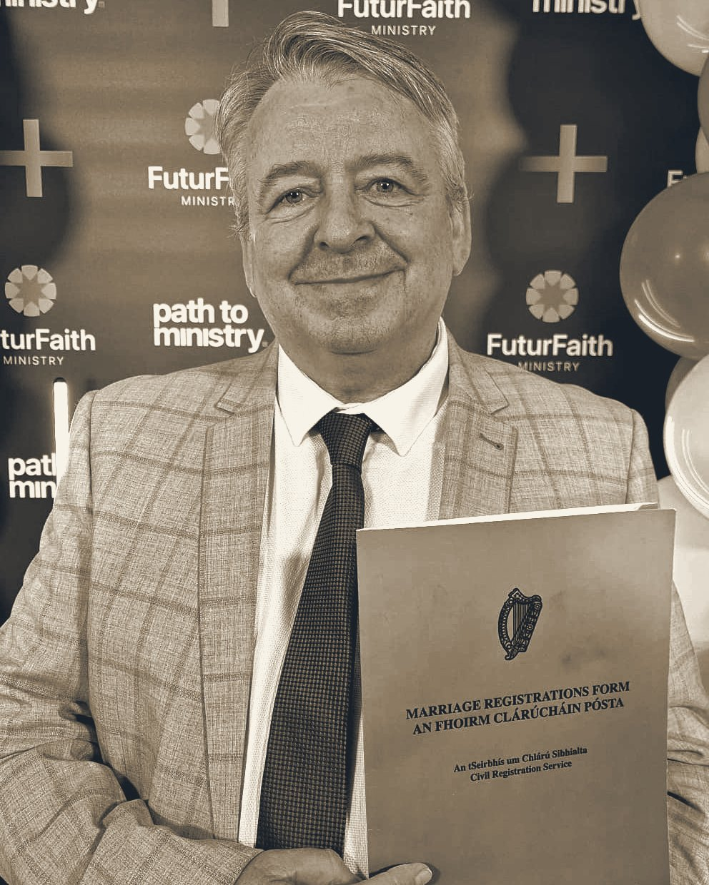

Weddings
A fully legal marriage ceremony at the venue of your choice, any day of the week, with your story, your vows and your music at its centre.
Enquire
Celebrant and HSE Registered Solemniser
Bespoke, heartfelt and personalised ceremonies for every chapter of life. Legally recognised, written with you and delivered with warmth, anywhere in Ireland.
Your Ceremony, Your Way

Welcome
A ceremony should sound like the people at the heart of it. Anthony writes each one from scratch: your words, your readings, your music, and the traditions that mean something to you. Nothing is read out on the day that you have not seen and approved first.
Weddings are the biggest part of what Anthony does, but far from the only part. Naming days, vow renewals, funerals and the milestones in between all deserve the same care.
Meet AnthonyCeremonies
Personal, inclusive and unhurried. Here are the ceremonies Anthony is most often asked for. If yours is not listed, ask.
A fully legal marriage ceremony at the venue of your choice, any day of the week, with your story, your vows and your music at its centre.
EnquireA warm welcome for a new arrival. Family, guide-parents and friends gather to celebrate a child and the people who will love them.
EnquireA respectful, personal farewell that honours a life as it was lived, whether religious, non-religious or somewhere in between.
Enquire
Ten years in or fifty, a renewal is a chance to say it all again with the people who have walked the road with you.
Enquire
Intimate, legal and unhurried. For couples who want all of the meaning without the production.
EnquireCommitment ceremonies, anniversaries, blessings, memorials and retirements. If it matters to you, it deserves to be marked properly.
Enquire
About Anthony
Anthony is a Carlow-based FuturFaith Minister and HSE Registered Solemniser, which means he can legally marry you at your venue on any day of the week, and welcomes people of every faith, mixed faith and none.
He has been married to Carol for more than thirty years. They have three sons, Jamie, Lee and Stuart, and two grandchildren, Croía and Éabha. Family celebrations are where Anthony learned what a good ceremony does: it gathers the people you love, says the things that matter out loud, and gives everyone a moment to remember.
What he brings to every ceremony is the same: careful listening, a script written with you rather than for you, and a calm, steady presence on the day so you can be fully in the moment.
As an HSE Registered Solemniser, Anthony can marry you at your venue on any day of the week.
Your words, your readings, your music. You see and approve every line before the day.
Religious, spiritual, mixed faith or no faith. Every couple and every family, celebrated as they are.
Music cues, candles, readers and paperwork quietly handled, so nothing is left to chance.
How it works
Four steps, no fuss. You will always know what happens next.
Send your date and venue. Anthony confirms availability, usually the same day, and answers any first questions.
A relaxed chat, in person or online, about who you are, what matters to you and the feel you want on the day.
Anthony writes your ceremony and sends it to you. Change anything, as often as you like, until it feels exactly right.
Anthony arrives early, sets the room, cues the music and guides everyone through. You just enjoy it.
Make it yours
Keep it simple or weave in something symbolic. These are some of the elements people love. Mix, match, or bring an idea of your own.
Kind words
★★★★★From the first phone call we knew we were in safe hands. Our ceremony felt like it had been written by someone who had known us for years, and our guests are still talking about it.
Sarah and Mark, Wedding, Co. Carlow
★★★★★Anthony captured Dad perfectly. He listened to every story we told him and gave him back to us on the day with such warmth. It was exactly the send-off he deserved.
The Byrne family, Celebration of Life, Co. Kildare
★★★★★Relaxed, funny when it needed to be and completely in control. The candle lighting with the grandparents had everyone in tears, in the best way.
Aoife and Tom, Naming Ceremony, Co. Kilkenny
Good to know
Yes. Anthony is on the HSE Register of Solemnisers, so a wedding he conducts is a legal marriage in Ireland. There is no need for a separate registry office appointment.
You give the HSE at least three months' notice of your intention to marry and attend a short appointment at a Civil Registration office. They issue your Marriage Registration Form (the green folder), which you bring on the day. Anthony walks you through every step.
Yes. Any day of the week, at any venue that is open to the public and suitable for a legal marriage. Hotels, country houses, gardens, barns and more all qualify. Anthony can advise on a specific venue.
Not at all. As a FuturFaith Minister, Anthony welcomes people of all faiths, mixed faiths, some faith and no faith. Your ceremony can be religious, spiritual, entirely non-religious, or a blend that honours both families.
Anywhere in Ireland. Travel beyond a set distance may carry a small cost, agreed with you in advance.
Popular summer and Saturday dates go a year or more ahead, so get in touch as soon as you have a date. Shorter notice is often possible, and naming and vow-renewal ceremonies can usually be arranged within a few weeks.
Fees depend on the type of ceremony, the location and the time involved in writing it. Send your details and you will have a clear, all-in quote with nothing hidden.
Tell Anthony a little about the ceremony you are planning. You will hear back within one working day.
Get in touch